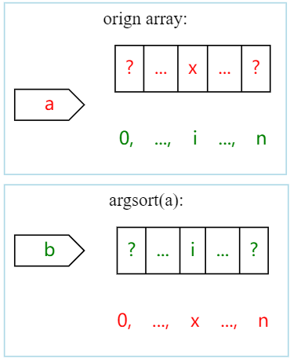

Argsort 以及Rank的Javascript代码练习
1 引言：argsort以及rank排序问题
$\P$ argsort-定义
假设一个数组$a$由$$\underbrace{[x_0,x_1,\dots,x_i, \dots,x_n]}_{0\dots n乱序}$$构成,那么$b=argsort(a)$定义为：经过排序后a中元素（即$0..n$）的索引数组：
$$ \underbrace{[a中第0大数的索引,\dots,a中第i大数的索引, \dots,a中第n大数的索引]}_{0\dots n} $$
我们假设$a[i]= x$,由于$i是a中第x大的数$，那么$i在b中位置就是x$,${b[x]=i}$,如图所示：

消去x,可得: $$ b[x]=b[a[i]]=i $$
$\S$如果对a进行两次argsort，会发生神魔事情呢,这里由一个文章回答为什么对数列使用两次argsort后能得到原数列的rank数列？ - 知乎 (zhihu.com)，摘抄如下:
对于一个从0~k-1组成序列a来说，执行argsort得到序列b就是b[a[i]]=i，再执行一次得到c就是c[b[j]]=j，代入j=a[i]得c[b[a[i]]]=a[i]，c[i]=a[i],所以一个rank序列两次argsort之后自然会变回原样
结合上面的假设a是一个0…n 乱序而来的数组，那么a里面存储的正好是数组a中各元素的排名。推广到任意乱序的序列S，我们只需要将S里的元素一一映射到$[(S_i,a_i)],a_i\in {0..n}$，然后对$S_i$排序,$argsort.argsort(a)=rank(a)$。
2. Show me the code!
// a[i],b[i] = > {...a[i]:b[i]...}
zip = function (a, b) {
let r = []
for (let i in a) {
r.push([a[i], b[i]])
}
return r;
}
// argsort返回的是索引 r，[a[r[0]]..a[r[n]]] 就是将a排序好的数组
function argsort(arr, cmp = (a, b) => a - b) {
let arr_ind = zip(arr, range(arr.length))
return arr_ind.sort(([a], [b]) => cmp(a, b)).map(([, i]) => i)
}
//@获取arr排序后的位置。
// rank([1,2,3,4,0,4],(a,b)=>b-a)
// (out) [4, 3, 2, 0, 5, 1]
function rank(arr, cmp = (a, b) => a - b) {
let arg = argsort(arr, cmp) // # 排序后的索引
return argsort(arg)
}
3 More…
需要考虑的是，现实中的排名可能由并列的情况，Excle的rank函数生成排名会出现重复，那么进行特殊处理一下就可以了。这里给出一个直观的实现：1先排序，然后去除重复值，最后查排名：
//@获取arr排序后的位置。允许并列
// rank_data([1,2,3,4,0,4],(a,b)=>b-a)
// (6) [4, 3, 2, 1, 0, 1]
function rank_data(data, cmp = (a, b) => a - b) {
var sorted = data.slice().sort(cmp);//排序数组按照降序排列，加slice()不改变data原数组；
var arr = []
for (let i = 0; i < sorted.length - 1; ++i) {
arr.push(sorted[i]);
while (i + 1 < sorted.length && sorted[i] == sorted[i + 1]) { //SKip duplicated value
++i;
}
}
// TODO remove duplicated!
var rank = data.map(v => arr.indexOf(v) + 1);//通过indexof函数查找值第一次出现的索引位置+1就是排名；
return rank;
}
$\blacksquare$